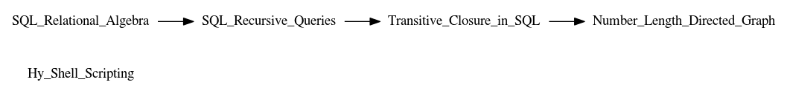

D
W
H
Blog
Main Menu
Chronological
Updated
Categories
Threads
Feed
About
R
e
sum
e
Projects
Back to Top
Blog Post Threads
Blog Post Threads
Hy Shell Scripting
Hy Shell Scripting
SQL Relational Algebra
SQL Relational Algebra
SQL Recursive Queries
SQL Recursive Queries
SQL Relational Algebra->SQL Recursive Queries
Transitive Closure in SQL
Transitive Closure in SQL
SQL Recursive Queries->Transitive Closure in SQL
Number Length Directed Graph
Number Length Directed Graph
Transitive Closure in SQL->Number Length Directed Graph

List Links
Hy_Shell_Scripting
SQL_Relational_Algebra
SQL_Recursive_Queries
Transitive_Closure_in_SQL
Number_Length_Directed_Graph